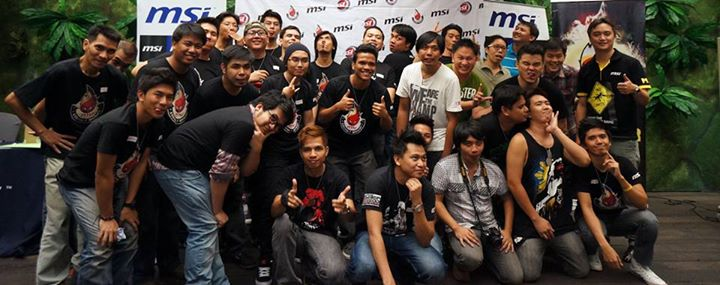

what is MSI
MSI is a Taiwanese multinational information technology corporation headquartered in New Taipei City, Taiwan. It designs, develops and provides computer hardware, related products and services, including laptops, motherboards, graphics cards, All-in-One PCs, servers, industrial computers, PC peripherals, car infotainment products, etc.
The company has a primary listing on the Taiwan Stock Exchange and was established in August 1986 by 5 founders – Hsu Xiang (a.k.a. Joseph Hsu), Huang Jinqing (a.k.a. Jeans Huang), Lin Wentong (a.k.a. Frank Lin), Yu Xian'neng (a.k.a. Kenny Yu), and Lu Qilong (a.k.a. Henry Lu). First starting its business in New Taipei City, Taiwan, MSI later expanded into Mainland China, setting up its Baoan Plant in Shenzhen in 2000 and establishing research and development facilities in Kunshan in 2001. It also provides global warranty service in North America, Central/South America, Asia, Australia and Europe